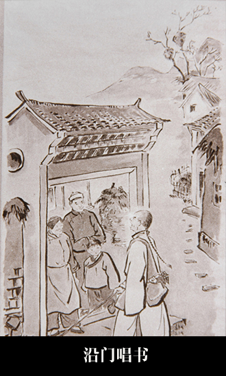

四工合调
2019-05-16 19:55:45
清咸丰元年(1851)前后，嵊州市甘霖镇马塘村农民金其炳创立。它是在当地道士宣卷调、忏经佛曲的基础上，吸收牧牛山歌和外地同类唱调而形成的。
唱腔特征
具有高昂明快的牧歌音调及委婉起伏韵味醇厚的帮腔曲调，并由主唱、接调（帮腔）两部分组成。主腔部分的腔句有“起调腔句、上下句、掼调转句”三种形式。接调帮唱部分腔句，接在起调腔句后面，作为承前启后的过渡性腔句；接在掼调转句后面可作为间歇过渡，可代作落调（过门）腔句。它没有独立性专用起调落调，其上下句的平叙腔句，因旋律偏高，字位紧，节奏促，致使唱不到几句就要间歇，缺乏无限反复的平叙功能。所以说，它是“起、平、落”结构的变体。